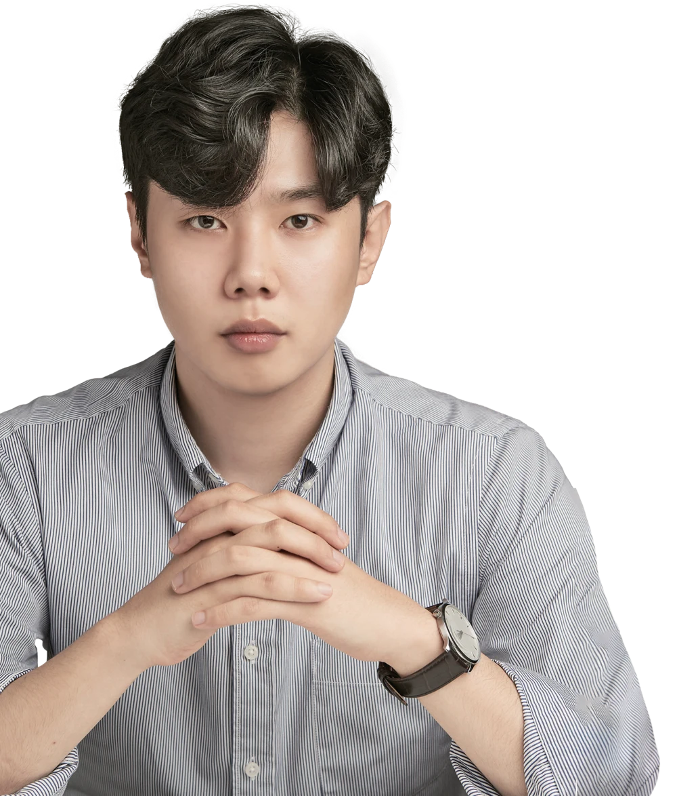
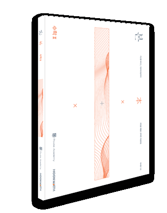
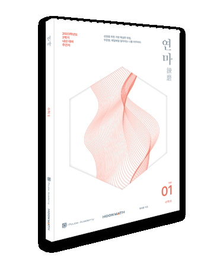
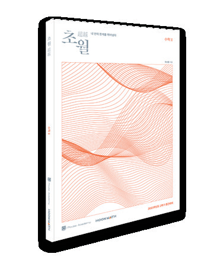
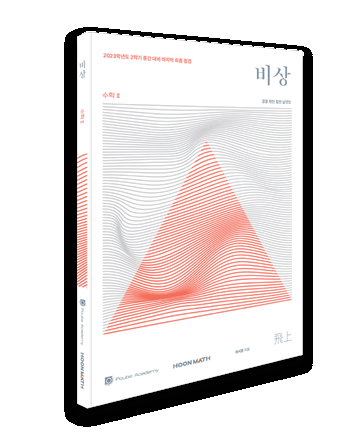
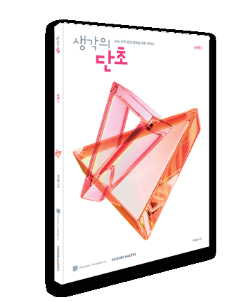
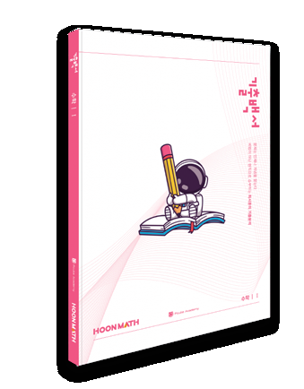

개념의 본질
교과서의 정의와 정리를 바탕으로 무엇을, 어디까지 생각해야 하는지 배웁니다. 개념을 자신만의 언어로 이해하는 것에서 시작합니다.
정확하게 이해하기HOONMATH · CHOI SEOHOON
개념에서 시작해,
스스로 풀어내는 힘으로.
풀이의 이유를 이해하고,
자신의 생각을 논리적으로 표현하는 수학.

MEET YOUR TEACHER
문제를 풀어주는 데서 멈추지 않고,
학생 스스로 풀어낼 수 있는 힘을 기릅니다.
01 / TEACHING PHILOSOPHY
‘왜 이렇게 풀어야 하는가’에 답하는 수업.
개념과 문제 사이의 연결고리를 함께 찾습니다.
교과서의 정의와 정리를 바탕으로 무엇을, 어디까지 생각해야 하는지 배웁니다. 개념을 자신만의 언어로 이해하는 것에서 시작합니다.
정확하게 이해하기개념이 문제 해결에 적용되는 근거와 과정을 설명합니다. 낯선 문제 앞에서도 흔들리지 않도록 일관된 사고의 원칙을 세웁니다.
이유를 알고 풀기정답뿐 아니라 그 답에 이르는 과정을 살핍니다. 논리적인 서술과 풀이 점검을 통해 생각의 빈틈과 계산 실수를 짚어갑니다.
스스로 설명하기02 / LEARNING ROADMAP
개념부터 실전까지.
한 단계씩 연결되는 학습.
정의와 정리를 정확히 이해하고, 필수 예제로 생각의 출발점을 만듭니다.
이해배운 개념을 스스로 적용하며 풀이의 근거와 사고 과정을 정리합니다.
연결기출 문항의 조건과 핵심을 읽고, 문제 해결의 원칙을 익힙니다.
확장취약한 개념과 오답을 돌아보며 실전에서 필요한 풀이 태도를 점검합니다.
완성03 / CLASS MATERIALS
개념의 시작부터 실전의 마무리까지.
학습 단계에 맞춰 이어지는 교재 구성.

확대 보기기본 개념부터 심화 개념까지,
개념의 구조를 세우는 시작.

확대 보기매일의 꾸준한 연습으로,
배운 내용을 자신의 것으로.

확대 보기기출과 심화 문항을 바탕으로,
문제 해결의 폭을 넓히는 과정.

확대 보기핵심 개념과 주요 문항을 돌아보며,
시험 직전 생각을 정리하는 마무리.

확대 보기개념과 문제가 결합하는 과정을,
일관된 논리로 이해하는 학습.

확대 보기기출에 담긴 핵심을 읽고,
변하지 않는 풀이의 원칙을 정리.
위 이미지는 2025년 수업 자료의 교재 예시입니다. 현재 수업에서 사용하는 교재는 수강 상담 시 안내합니다.
04 / LEARNING CARE
배운 내용의 이해부터 풀이 과정의 점검까지.
학생이 스스로 생각하는 힘을 기르는 학습 방향입니다.
배운 개념과 문제를 다시 살피며 자신의 이해를 확인합니다.
틀린 이유와 풀이의 흐름을 살피고 생각의 빈틈을 찾아갑니다.
부족했던 개념과 유형을 정리해 다음 학습의 방향을 세웁니다.
혼자 막혔던 부분을 질문하고 이해하는 과정으로 이어갑니다.
한 문제를 풀더라도,
스스로 납득할 수 있도록.
05 / CLASS GUIDE
궁금한 내용을 먼저 확인해 보세요.
ENROLLMENT & CONSULTATION
학교·학년·희망 과목을 알려주세요.
학생의 현재 학습과 목표를 함께 살펴보겠습니다.